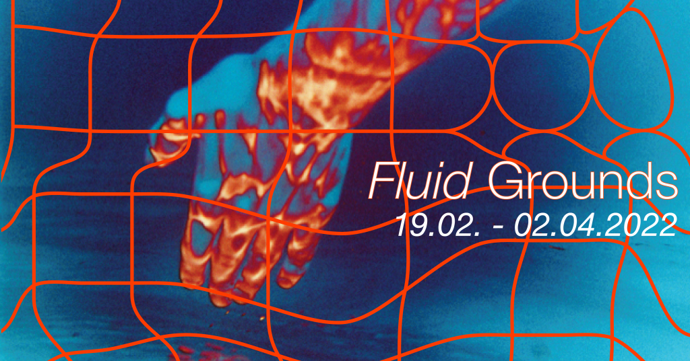
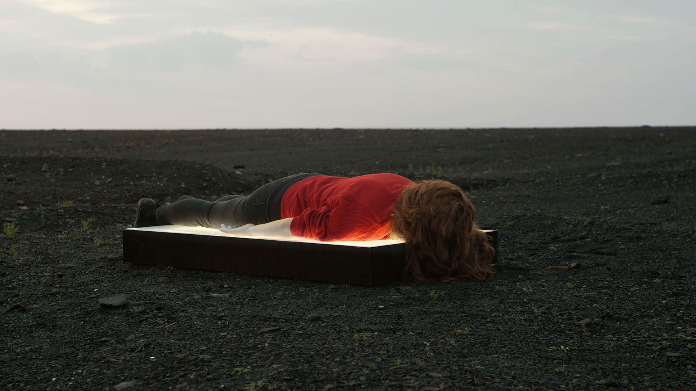
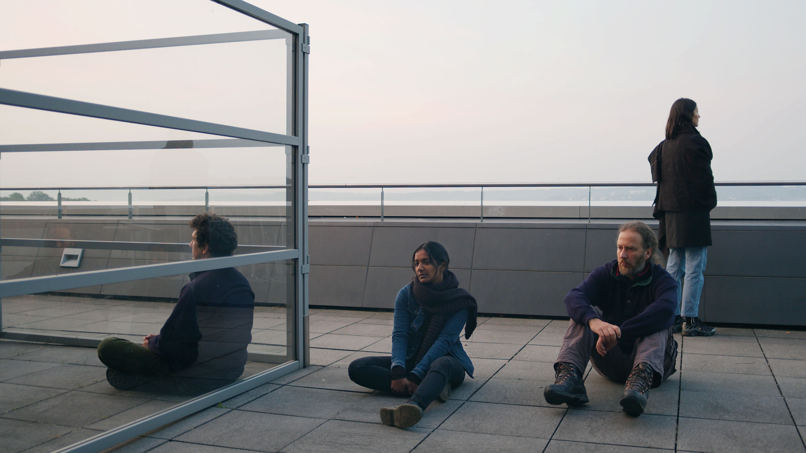
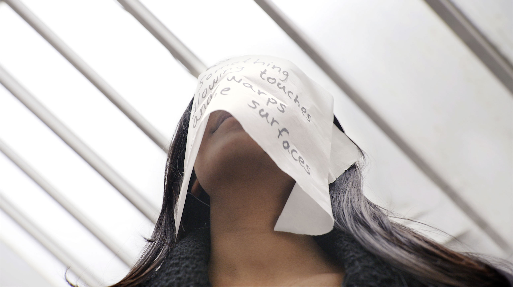
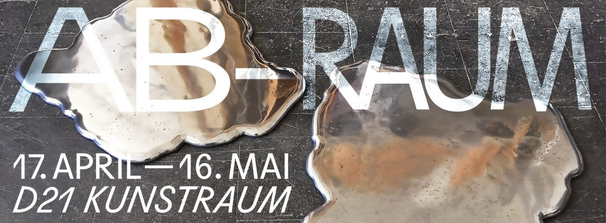
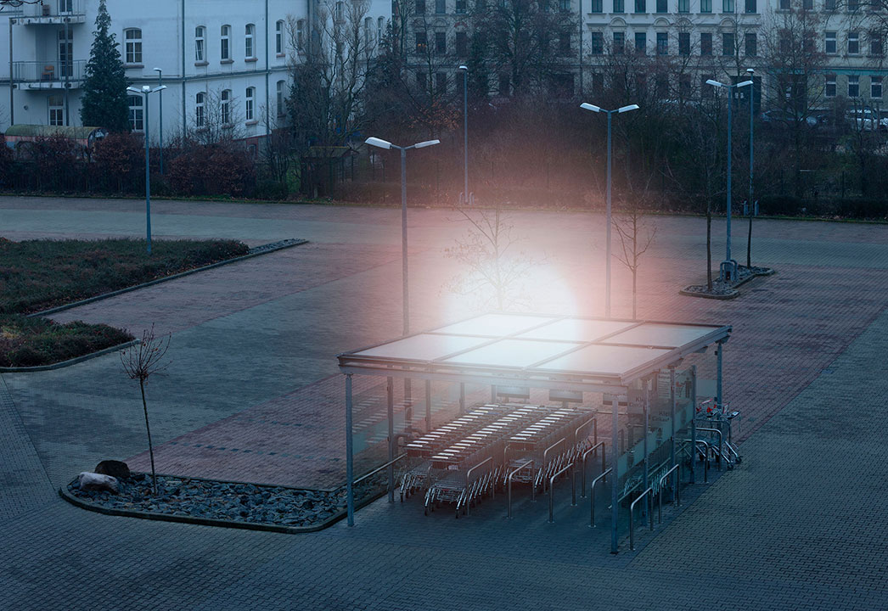

The Future is Now
8 September - 31 October 2022
https://bandungphotographytriennale.com
Exhibition by the artists’ collective ΔDELTA at Galerie der HFBK, Hamburg
2 September - 15 September 2022
Artits: Jessica Arseneau, Juan Pablo Gaviria Bedoya, Jaewon Kim, Anneliese Greve, Fritz Lehmann, Jakob Limmer, Snow Paik, Hara Shin, Siri Wirtensohn
https://www.instagram.com/fluid_delta/16 - 21 August 2022
Dawns (original title Aubes) will be shown on August 18, 12 - 3 PM
Haus der Kulturen der Welt (HKW)
14 Mai, 8 PM - 11 PM
Esplanade in frot of the gallery Le Bleu du Ciel
20 rue des Fantasques, Lyon
Artists: Jessica Arseneau, Alexandre Bagdassarian, Elsa Beaumont, Thomas Causin, Delphine et Elodie Chevalme, Christophe Daviau, Margaret Dearing, Juliette Larochette, Natalya Saprunova, Chanwei Tang, Loïc Vendrame, Jeffrey Wolin.
https://festival9ph.com2 - 8 Mai 2022
Dawns (original title Aubes) will be shown on Mai 3 at Rue Francaise, Paris

Fluid GroundsExhibition by the artists’ collective ΔDELTA at a&o Kunsthalle, Leipzig
Curators: Julien Rathje, Tanja Heuchele
Artits: Jessica Arseneau, Juan Pablo Gaviria Bedoya, Jaewon Kim, Anneliese Greve, Fritz Lehmann, Jakob Limmer, Snow Paik, Hara Shin, Siri Wirtensohn
20 February - 2 April 2022
Opening: 19 February, 4 PM
More info: https://aokunsthalle.com/exhibition/fluid-grounds/

DawnsStore window exhibition in the city centre of Mülheim
Ringlokschuppen Ruhr
From 4 - 13 December 2021
More info: www.urbanekuensteruhr.de/de/project/dawns

Surrounding Uncaring SkiesSolo exhibition at Galerie d'art Louise-et-Reuben-Cohen
For FICFA, Festival international du cinéma francophone en Acadie
Volet Arts Médiatiques (VAM)
6 November - 19 December 2021
Opening: 12 November at 16h
www.ficfa.com/volet-arts-mediatiques
This creation workshop, led by Jessica Arseneau, opens up a hybrid space between video, photography, and performance.
7 November at Galerie d'art Louise-et-Reuben-Cohen
More information on the Facebook Event
A visitor to UrbaneKünsteRuhr as a guest of SilentUniversityRuhr
From January 2021 - December 2021

forma „10+1“ JubiläumsfestivalAnniversary festival of forma Leipzig, organization for contemporary music and literature.
My most recent work Diachronic , 2021, is a virtual exhibition via Mozilla Hubs. The work becomes a place to meet for the festival as well as an art exhibition to visit with your avatar.
Link to the virtual exhibition: https://hubs.mozilla.com/Av6YMPi/diachronic/
It works best with Firefox or Google Chrome
Festival program: https://linktr.ee/formaleipzig

AB-RAUMGroup exhibition at D21 Kunstraum, Leipzig
17 April - 16 Mai 2021
Soft opening on 17 April 2021
Opening hours: Friday, Saturday, Sunday, 3:00 PM - 7:00 PM
Artists: Ingeborg Lockemann, Shlomit Bauman, Grit Ruhland, Inken Reinert, Roswitha von den Driesch/Jens-Uwe Dyffort, Anna Schimkat, Jessica Arseneau, Mandy Gehrt, Renata Lucia, Sven Kalden, Oliver van den Berg
www.d21-leipzig.de
Lichtspiele des Westens
Exhibition in Leipzig's urbain space on Karl-Heine-Straße and around
5 December 2020

HGB DIPLOM, RUNDGANG 2020Exhibition of the graduates of the Academy of Visual Arts Leipzig
Dates: 8 - 10 October
Opening hours: 12:00 - 8:00 PM

Nothing but a Constant Glow
Solo exhibition at Spinnerei Archiv Massiv, Leipzig
Opening 1st of August 2020
On view until 22 August 2020

The Screen Under My Eyelids
Solo exhibition at Helmut, Leipzig
Opening 28 February 2020
On view until 18 March 2020
Helmut: helmut.space/en/art/
Facebook: Event
Inside Out Project – Residency in Regis-Breitingen
Performance on 12th October 2019, 6 PM on the Marketplace (Markplatz)
Presentation of works on 26th October 2019, 3 PM at Bahnhof til 7 PM at Modehaus. Participant Artists: Roswitha von den Driesch und Jens-Uwe Dyffort, Ingeborg Lockemann, Marike Schreiber, Hannah Sieben. Curators: Mandy Gehrt, Ina Luft, Constanze Müller
Exhibition from 26 to 30 October 2019

Public POOL #7 DIFFÉRENTES FORCES – Verschiedene Kräfte
Performance at La Friche la Belle de Mai, Marseille
June 1st 2019, 4 PM
A proposition of Lydie Marchi and Constance Juliette Meffre for CEA / Association française des commissaires d’exposition, with Jean-Christophe Arcos, Anne-Valérie Gasc & Judith Lavagna
Participants: Aymar BATETANA CASANOVA , Arthur ESKENAZI, Bérangère ARMAND, Javiera TEJERINA, Sophie INNMANN, Anne BERGEAUD & Orane STALPERS, Léna FILLET, Inès KOUSSA GRADENIGO, Andrea GÜNTHER, Bingjie LUAN, Jessica ARSENEAU, Alexandre GERARD, Marie LIENHARD, Won Jin CHOI & Julia Martha MÜLLER.
Facebook: Public POOL
VAR13
Group exhibition at Westpol Airspace, Leipzig
Jessica Arseneau, Leila Brinkmann, Marlene Franz, Felix Grabe, Friedrich Jacob Günther, Taemen Jung, Leonard Korbus, Lisa Kottkamp, Anna Raczynska, Snow, Malte Urban, Andrea Garcia Vasquez
Opening: 10 Mai 2019, 6 PM
Dates: 10 - 18 Mai 2019
Westpol Airspace: www.facebook.com/Westpol.Air.Space
Facebook: VAR13 Ausstellung im Westpol
BeijosXXXX
Exposition collective à Agora Collective, Berlin
27 janvier 2019
Lichtspiel des Westen
Art dans l'espace publique sur Karl-Heine-Straße
4 décembre 2018
Reading the Cities
Exhibition in public space for the 25th anniversary of sister cities Leipzig - Houston
Leipzig City Center
25 - 28 october 2018

DESTILLAT
Group exhibition for festival LINDENOW
Altes Kaufhaus West - ehem. HELD, Luetzner Straße
5 - 7 octobre 2018
Facebook event: DESTILLAT | SONDERNAUSSTELLUNG
Metamorphosis. The Human Stories
International student art exhibition in conjunction with the
International Association for the Study of Forced Migration (IASFM)
17: Whither Refugees? Restrictionism, Crises and Precarity Writ Large
24 - 27 July 2018
University of Macedonia, Thessaloniki, Greece
IT'S JUST A MATTER OF UTILITY
A 24 hours group exhibition at Lindenauer Hafen, Leipzig
Artists: Jessica Arseneau, Johanna Blank, Jens Dickemann, Hyunjung Han, Martin Haufe, Taemen Jung, Jakob Limmer, Lisa Kottkamp, Jihee Moon, Toni Mosebach, Andrea Garcia Vasquez, vonbrota, Kay Yoon, Kai-Hendrik Windeler
Starts: June 29th at 6 pm
Ends: June 30th at 6 pm
Facebook Event: IT'S JUST A MATTER OF UTILITY
Lichtenberg Studios, Berlin
Artist Residency
May 2018
Absurdism Film Event
Videos by: jessica arseneau, benedikt braun, minhye chu, the destroyer, elizabeth gerdeman, michael hahn, stefan hurtig, nicolas manenti, maeshelle west-davies, tattoonowsky
Curator: maeshelle west-davies
Friday March 9th, 2018
8 to 11 pm
At Helmut, Leipzig
Facebook: Absurdism Film Event

Artist talks: Michael Hahn & Jessica Arseneau
Hosted by LE SALON at DAS KAPiTAL, Berlin
Thursday March 8th, 2018, 8pm
Opening: October 24th, 5pm
Exhibition in collaboration with Mandy Gehrt at Interim, Leipzig


October 6, 7 and 8
Opening: Friday 7 pm
Don't miss!
LECTURE: "The Last Book", Saturday 5 pm and Sunday 5 pm
Facebook LindenowAugust 2017
I'm very delighted to be granted a course with artist Michael Beutler as mentor.
Group exhibition at Memorial to the Division of Germany in Marienborn, Germany

May 21st to June 30th 2017
Opening May 21st at 2pm.
FacebookArtists: Jessica Arseneau, Fabian Bechtle, Sven Bergelt, Joachim Blank, Zaida Guerrero Casado, Jaeyong Choi, Fabia Fröhlich, Mandy Gehrt, Marlet Heckhoff, Frank Holbein, Christian Holze, Geeske Janßen, Bernadette Keating, Leonard Korbus und Christoph Görke, Elva Lai, Alexander Lorenz, Slavica Radic Lemac, Carsten Saeger, Soenke Thaden, Malte Urban, Rahel Zaugg
Séance (2015) will be presented as part of the new aquisitions of Groupe Intervention Video (GIV)
February 21th 2017 at 7:30 pm
With Groupe Intervention Vidéo
Facebook
Opening February 9th 2017, 6 h pm
Cover Extended, group exhibition of the Class for Installation and Spatial Art from February 9th to 12th 2017. Curator: Bettina Allamoda
There Ain't No Moonlight After Midnight, 2017, performance February 9th, 8 h pm